Spectrum and Resonances
Contents
In the section on the existence and uniqueness of SSMs, we have defined the relative spectral quotient of a spectral subspace 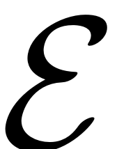 as
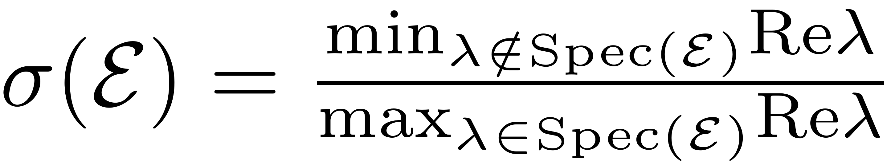
From a purely theoretical perspective, the integer part of this quotient gives the maximal degree of smoothness of general type invariant manifolds of the dynamical system. The SSM is the unique manifold which has a degree of smoothness higher than 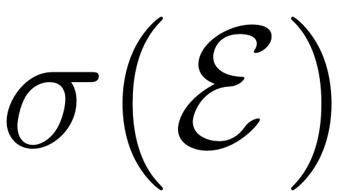. For the computation of the SSM an approximation of order equal or higher than the relative spectral quotient thus guarantees that the computed manifold indeed is the unique smoothest invariant manifold.
This spectral qutioent, however, also has further implications about the global dynamics. Especially in the case of slow SSMs, which are constructed over the slowest spectral subspaces, the relative spectral quotient gives indications about how strongly nearby trajectories are attracted to the SSM. In this case the quotient is a measure of the spectral separation of the linear part of the dynamics on, and orthogonal to the master spectral subspaces. The larger the quotient, the faster full system trajectories collapse onto the SSM. At the same time, distinguishing the SSM from other, less smooth, invariant manifolds becomes harder, as the order of approximation in the computation has to be pushed higher.
Note that the relative spectral quotient does not influence the validity of the computed forced response on the SSM or other system characteristics obtained from it -it is still invariant and produces an exact ROM for the full system. It merely describes linear decay characteristics of the system. The periodic orbits and other properties that are computed on the invariant manifold, exist in the full system as well - precisely due to the invariance of the manifold.
An illustration of the dynamics of a sample system, depending on the magnitude of the relative spectral quotient this is given in the following figure (Ponsioen, Pedergnana & Haller, 2018).
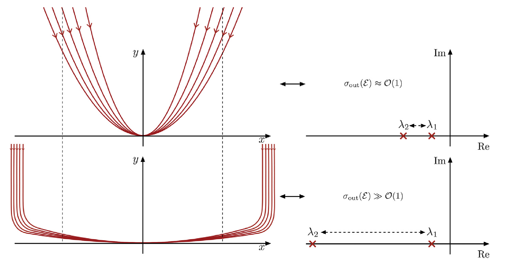
A similar quotient is also defined for the existence of non-autonomous SSMs, details are provided by Haller & Ponsioen 2016.
Resonance Conditions
In this section we try to motivate how the resonance conditions that are imposed for the existence of an SSM can be understood in the context of the computational procedures for the manifold. For this we consider a first order dynamical system. The eigenproblem for the linear part of this dynamical system reads
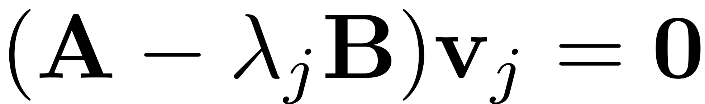
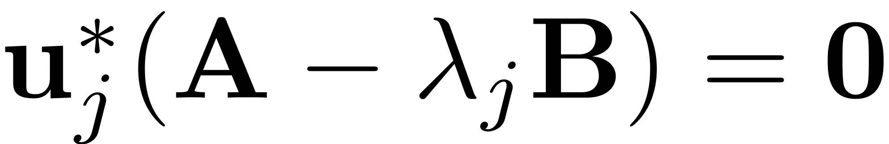
The invariance equation for the computation of the autonomous SSM for a multi-index  reads (cf. Thurnher, Haller & Jain, 2023)
reads (cf. Thurnher, Haller & Jain, 2023)
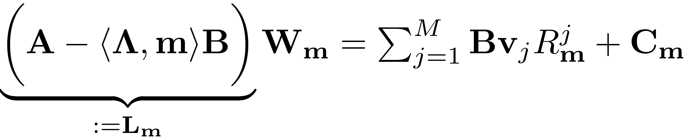
The vector 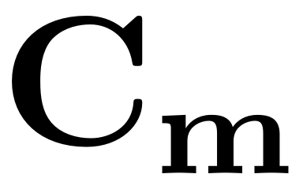 contains all the contributions of lower order coefficients and the nonlinear functions and is introduced for notational convenience. For more details on the derivation and properties of this expression, as well as a specific treatment for second order mechanical systems see for instance Jain & Haller, 2021 and Thurnher, Haller & Jain, 2023. The vector 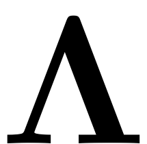 contains the eigenvalues that correspond to the master modes. If the resonance condition 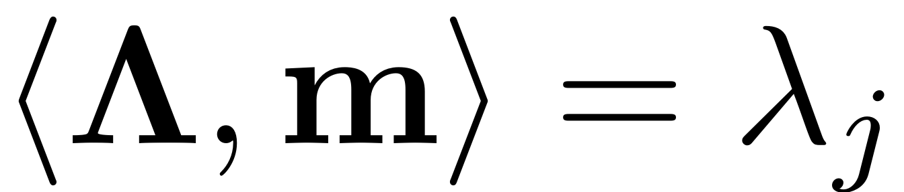 is fulfilled, then 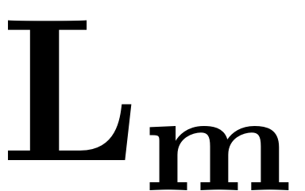 is singular and the equation is ill defined. For damped systems the configurations which lead to such a resonance form a volume zero set - the probability of such an exact resonance occurring is therefore zero. However, especially in the case of lightly damped structures, near resonances of the form

are common. In fact, due to the complex conjugacy relations of mode-pairs, this condition is always fulfilled for lightly damped modes up to certain orders of (cf. Szalai, Ehrhardt & Haller, 2017). For instance
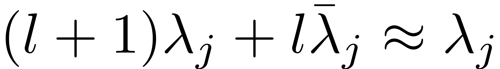
is always fulfilled for small enough 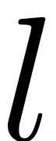. These resonances do not impair the existence of the SSMs, but do reduce the domain of convergence of the power series which approximate them, as they lead to very large coefficients in the parametrisation of the manifold. This is where the choice for computing the reduced dynamics comes into play. There are two cases which need to be distinguished: the first includes resonances which occur for modes which form part of the master spectral subspace over which the SSM is computed. The second includes resonances with all other modes, ie. the ones that are not part of the underlying spectral subspace.
Resonance of SSM-modes
In this case the resonance condition is fulfilled for a mode within the master spectral subspace, ie.
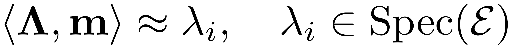
The coefficient matrix is thus nearly singular. In other words, the projection of the invariance equation onto the subspace spanned by the eigenvector 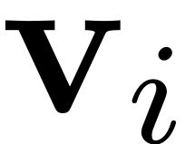 is nearly singular. Solving this equation numerically will thus lead to large coefficients in the SSM parametrisation 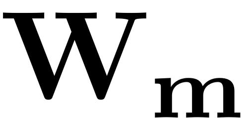. This issue can, however, be avoided by choosing a normal form of the reduced dynamics. To do so we demand the equation be trivial on this subspace by invoking
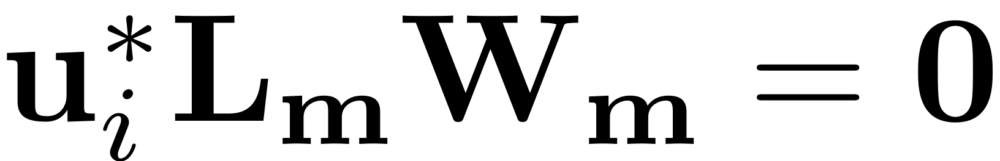
For the reduced dynamics 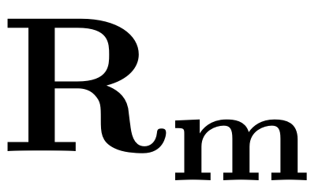 this implies that they must be chosen such as to satisfy
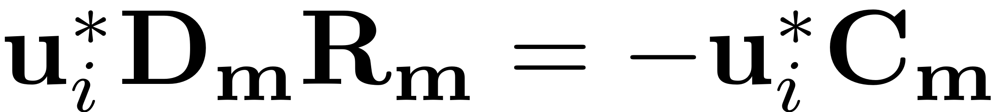
The freedom to choose the reduced dynamics in order to lift the singularity which arises due to the resonance stems from the underdeterminancy of the invariance equation. It is formed by a system of 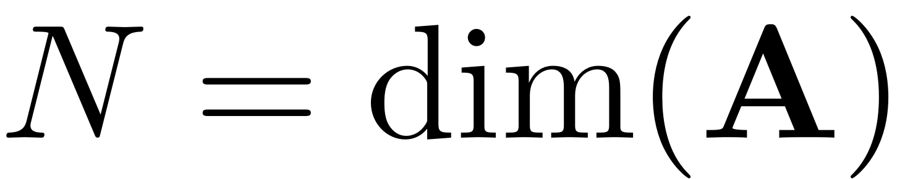 equations, but the number of unknows is 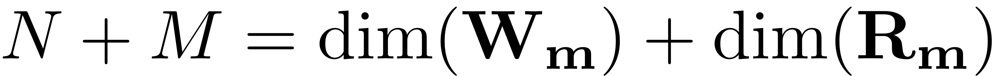. This is leveraged to choose the normal form reduced dynamics.
An alternative form of computing the coefficients is given by the graph style parametrisation (cf. Jain & Haller, 2021 ).
Resonance of external modes
In the case of a resonance of the master-modes with external modes, the resonance condition which is fulfilled reads

In this case, the theorem on the existence of SSMs does not guarantee the existence of the manifold. As we will see shortly, it cannot be computed due to singular equations. Intuitively, in physcial terms this also makes sense. If modes on the SSM are resonant with other system modes, then there will be considerable energy transfers between the modes, which couples them. These modes thus also get excited if the master mode is active so taking them and their nonlinear continuations into account is inevitable if an invariant ROM is to be achieved.
In mathematical terms: any invariant object, that does not take these resonant modes into account, would be orthogonal to the linear subspaces spanned by these resonant eigenmodes, at the linear order. Including nonlinear terms would thus never be able to account for the nonlinear couplings, as the SSM is tangent to the subspace over which it is constructed.
In algorithmic terms, there is no redundancy which can be exploited in this case to make the SSM coefficients computable. Due to the structure of the vector, lies in the master spectral subspace and is thus orthogonal to 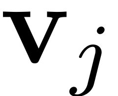 for any mode that is not part of that subspace. The projection onto the equations thus leads to
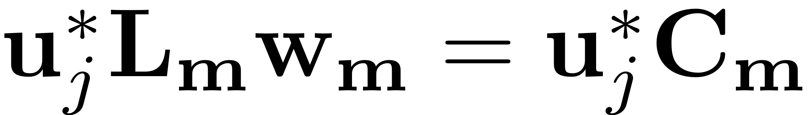
which is still a nearly singular equation. On the theoretical side the resonances in the spectrum hinder the existence of the manifolds due to the couplings that they bring about, in practice this impedes the computation of the manifold parametrisation. In such a case where the full dynamical system possesses internal resonances, all resonant modes have to be included to the master subspace. Once included, the arising resonances can be treated with the methodology that we use for the resonance of SSM-modes.
In our toolbox the tolerance for the occurence of these resonances is set with the reltol parameter, which indicates below which value a resonance is triggered. This is used to check for the existence of a specified SSM before starting its computation. It can be set via
set(S.Options, 'reltol', reltol)
The absolute tolerance, beyond which resonances are triggered is defined as
abstol = reltol * min(abs(lambda_M))
Whether a resonance is detected for a mode  is thus determined by
is thus determined by
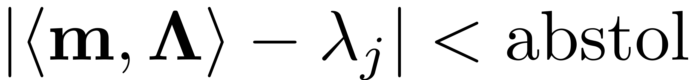
Internal resonances and mode selection
For a system where internal resonances are present, the master subspace needs to include all resonant modes. As a result, the ROM and the SSM which results will have dimension higher than two.
The parameter IRtol is used to control which modes effectively get included to a manifold computation, given a specified mode over which the SSM is to be constructed. For this, the ratio 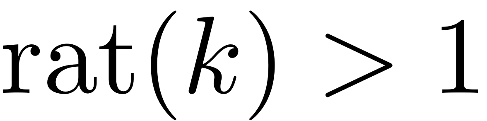 of a mode  to the master mode with index 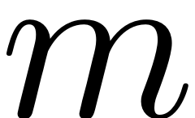 is defined as
to the master mode with index 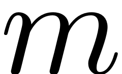 is defined as
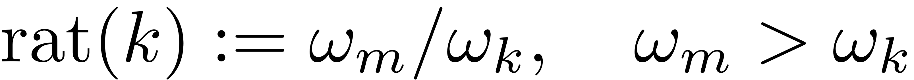
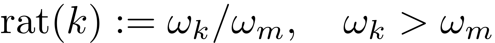
A mode is then included into the master subspace and taken into account for SSM computation if 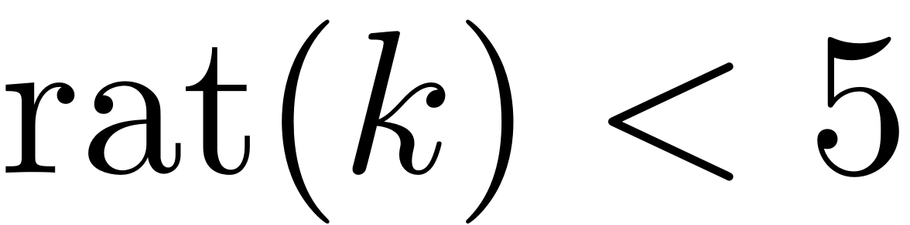 and
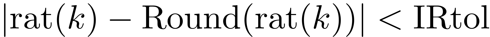. This parameter is set via
set(S.Options, 'IRtol', IRtol)
The set of modes, which is chosen as a basis of the master spectral subspace for model reduction when searching for the resonant forced response should thus in general include all modes that
- assume a resonance relationship with any of the external excitation frequencies
- assume a resonance relationship with a mode, that is already included in the master spectral subspace